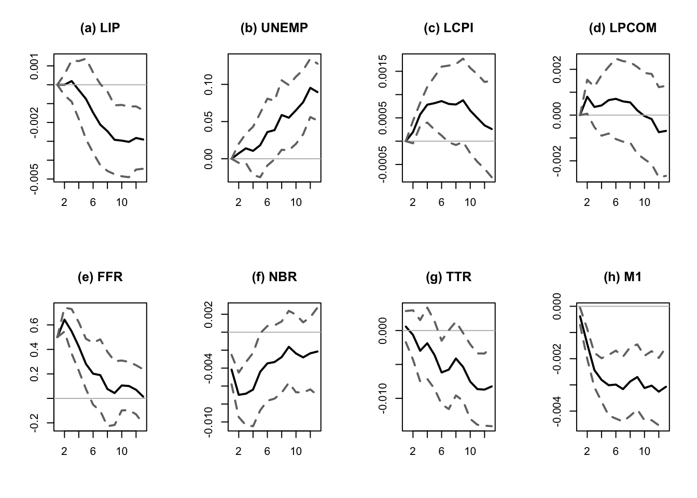
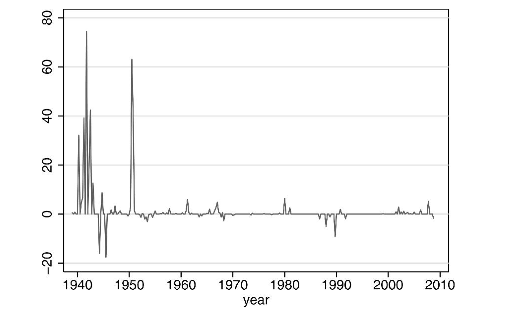
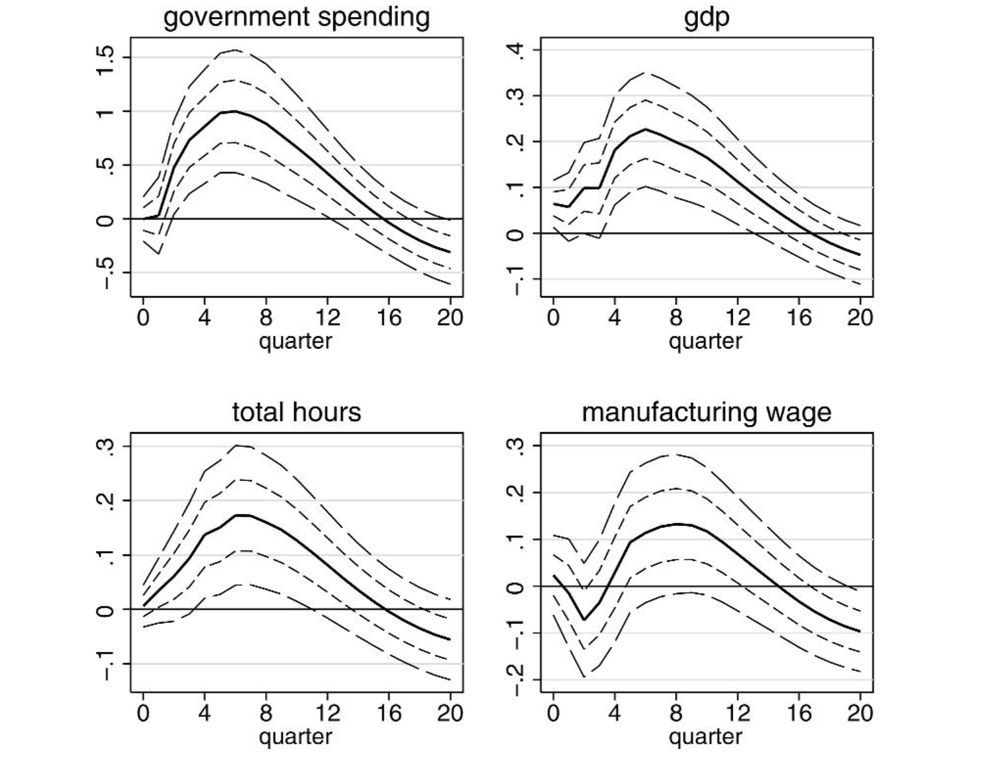
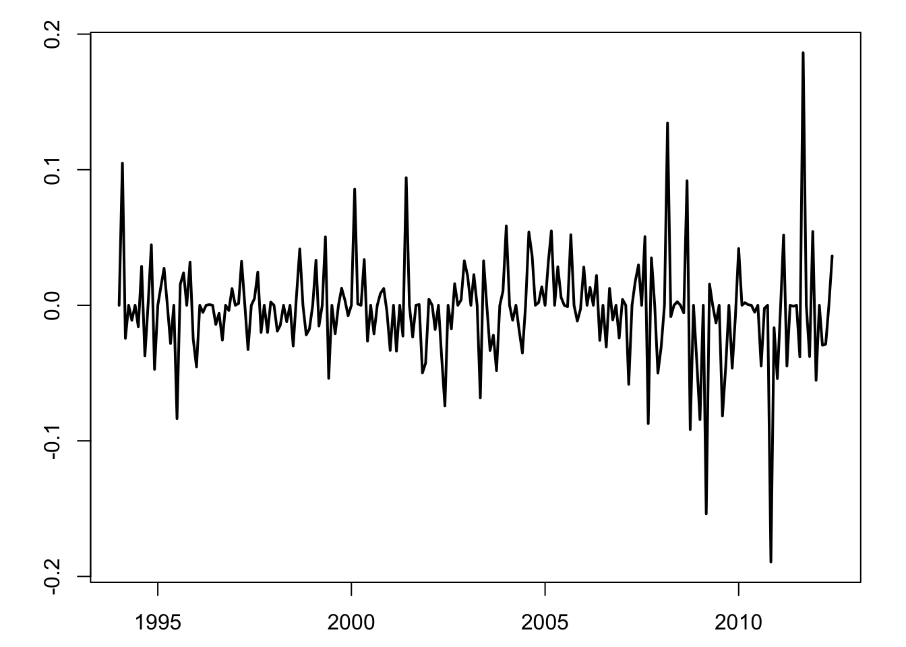
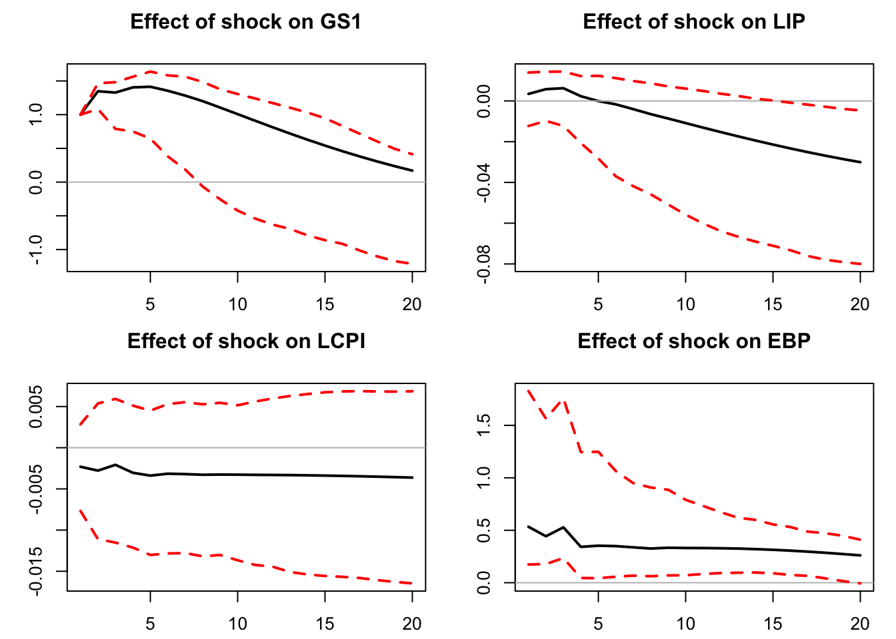

Chapter 8 Local projection methods
8.1 Overview of the approach
Consider the infinite MA representation of \(y_t\) (Eq. (1.4)): \[ y_t = \mu + \sum_{h=0}^\infty \Psi_{h} \eta_{t-h}. \] As seen in Section 1.2, the entries \((i,j)\) of the sequence of the \(\Psi_h\) matrices define the IRF of \(\eta_{j,t}\) on \(y_{i,t}\).
Assume that you observe \(\eta_{j,t}\), then a consistent estimate of \(\Psi_{i,j,h}\) is simply obtained by the OLS regression of \(y_{i,t+h}\) on \(\eta_{j,t}\):14 \[\begin{equation} y_{i,t+h} = \mu_i + \Psi_{i,j,h}\eta_{j,t} + u_{i,j,t+h}.\tag{8.1} \end{equation}\] Running that kind of regression (using instruments for \(\eta_{j,t}\)) is the core idea of the local projection (LP) approach proposed by Jordà (2005).
Now, how to proceed in the (usual) case where \(\eta_{j,t}\) is not observed? We consider two situations. While the second requires some instruments, the first approach does not. This first approach (Section 8.2) is the original Jordà (2005)’s approach.
8.2 Situation A: Without IV
Assume that the structural shock of interest (\(\eta_{1,t}\), say) can be consistently obtained as the residual of a regression of a variable \(x_t\) on a set of control variables \(w_t\) independent from \(\eta_{1,t}\): \[\begin{equation} \eta_{1,t} = x_t - \mathbb{E}(x_t|w_t),\tag{8.2} \end{equation}\] where \(\mathbb{E}(x_t|w_t)\) is affine in \(w_t\) and where \(w_t\) is an affine transformation of \(\eta_{2:n,t}\) and of past shocks \(\eta_{t-1},\eta_{t-2},\dots\).
Eq. (8.2) implies that, conditional on \(w_t\), the additional knowledge of \(x_t\) is useful only when it comes to forecast something that depends on \(\eta_{1,t}\). Hence, given that \(u_{i,1,t+h}\) (see Eq. (8.1)) is independent from \(\eta_{1,t}\) (it depends on \(\eta_{t+h},\dots,\eta_{t+1},{\color{blue}\eta_{2:n,t}},\eta_{t-1},\eta_{t-2},\dots\)), it comes that \[\begin{equation} \mathbb{E}(u_{i,1,t+h}|x_t,w_t)= \mathbb{E}(u_{i,1,t+h}|w_t).\tag{8.3} \end{equation}\] This is the conditional mean independence case.
Using (8.2), one can rewrite Eq. (8.1) as follows: \[\begin{eqnarray*} y_{i,t+h} &=& \mu_i + \Psi_{i,1,h}\eta_{1,t} + u_{i,1,t+h}\\ &=& \mu_i + \Psi_{i,1,h}x_t {\color{blue}-\Psi_{i,1,h}\mathbb{E}(x_t|w_t) + u_{i,1,t+h}}, \end{eqnarray*}\]
Given Eq. (8.3), it comes that, conditional on \(x_t\) and \(w_t\), the expectation of the blue term is a function of \(w_t\). Assuming this expectation is linear, standard results in the conditional mean independence case imply that the OLS estimator in the regression of \(y_{i,t+h}\) on \(x_t\), controlling for \(w_t\), provides a consistent estimate of \(\Psi_{i,1,h}\): \[\begin{equation} y_{i,t+h} = \alpha_i + \Psi_{i,1,h}x_t + \beta'w_t + v_{i,t+h}. \end{equation}\]
This is for instance consistent with the case where \([\Delta GDP_t, \pi_t,i_t]'\) follows a VAR(1) and the monetary-policy shock does not contemporaneously affect \(\Delta GDP_t\) and \(\pi_t\). The IRFs can then be estimated by LP, taking \(x_t = i_t\) and \(w_t = [\Delta GDP_t,\pi_t,\Delta GDP_{t-1}, \pi_{t-1},i_{t-1}]'\).
This approach closely relates to the SVAR Cholesky-based identification approach. Specifically, if \(w_t = [{\color{blue}y_{1,t},\dots,y_{k-1,t}}, y_{t-1}',\dots,y_{t-p}']'\), with \(k\le n\), and \(x_t = y_{k,t}\), then this approach corresponds, for \(h=0\), to the SVAR(\(p\)) Cholesky-based IRF (focusing on the responses to the \(k^{th}\) structural shock). However, the two approaches differ for \(h>0\), because the LP methodology does not assumes a VAR dynamics for \(y_t\).15
In the following lines of code, we employ the Jordà (2005)’s approach on the same dataset as the one used in Section 2.3. (We were then illustrating Christiano, Eichenbaum, and Evans (1996)’s methodology.)
Code
library(IdSS);library(vars)
data("USmonthly")
# Select sample period:
First.date <- "1965-01-01";Last.date <- "1995-06-01"
indic.first <- which(USmonthly$DATES==First.date)
indic.last <- which(USmonthly$DATES==Last.date)
USmonthly <- USmonthly[indic.first:indic.last,]
considered.variables <- c("LIP","UNEMP","LCPI","LPCOM","FFR","NBR","TTR","M1")
y <- as.matrix(USmonthly[considered.variables])
res.jorda <- make.jorda.irf(y,posit.of.shock = 5,
nb.periods.IRF = 12,
nb.lags.endog.var.4.control=3,
indic.plot = 1, # Plots are displayed if = 1.
confidence.interval = 0.90)
Figure 8.1: Response to a monetary-policy shock. Identification approach of Jorda (2005).
8.3 Situation B: IV approach
8.3.1 Instruments (proxies for structural shocks)
Consider now that we have a valid instrument \(z_t\) for \(\eta_{1,t}\) (with \(\mathbb{E}(z_t)=0\)). That is: \[\begin{equation} \left\{ \begin{array}{llll} (IV.i) & \mathbb{E}(z_t \eta_{1,t}) &\ne 0 & \mbox{(relevance condition)} \\ (IV.ii) & \mathbb{E}(z_t \eta_{j,t}) &= 0 \quad \mbox{for } j>1 & \mbox{(exogeneity condition).} \end{array}\right.\tag{8.4} \end{equation}\] The instrument \(z_t\) can be used to identify the structural shock. Eq. (8.4) implies that there exist \(\rho \ne 0\) and a mean-zero variable \(\xi_t\) such that: \[ \eta_{1,t} = \rho z_t + \xi_t, \] where \(\xi_t\) is correlated neither to \(z_t\), nor to \(\eta_{j,t}\), \(j\ge2\).
Proof. Define \(\rho = \frac{\mathbb{E}(\eta_{1,t}z_t)}{\mathbb{V}ar(z_t)}\) and \(\xi_t = \eta_{1,t} - \rho z_t\). It is easily seen that \(\xi_t\) satisfies the moment restrictions given above.
Ramey (2016) reviews the different approaches employed to construct monetary policy-shocks (the two main approaches are presented in 8.1 and 8.2 below). She has also collected time series of such shocks, see her website. Several of these shocks are included in the Ramey dataset of package IdSS.
Example 8.1 (Identification of Monetary-Policy Shocks Based on High-Frequency Data) Instruments for monetary-policy shocks can be extracted from high-frequency market data associated with interest-rate products.
The quotes of all interest-rate-related financial products are sensitive to monetary-policy announcements. That is because these quotes mainly depends on investors’ expectations regarding future short-term rates: \(\mathbb{E}_t(i_{t+s})\). Typically, if agents were risk-neutral, the maturity-\(h\) interest rate would approximatively be given by: \[ i_{t,h} \approx \mathbb{E}_t\left(\frac{1}{h}\int_{0}^{h} i_{t+s} ds\right) = \frac{1}{h}\int_{0}^{h} \mathbb{E}_t\left(i_{t+s}\right) ds. \] In general, changes in \(\mathbb{E}_t(i_{t+s})\), for \(s>0\), can be affected by all types of shocks that may trigger a reaction by the central bank.
However, if a MP announcement takes place between \(t\) and \(t+\epsilon\), then most of \(\mathbb{E}_{t+\epsilon}(i_{t+s})-\mathbb{E}_t(i_{t+s})\) is to be attributed to the MP shock (see Figure 8.2, from Gürkaynak, Sack, and Swanson (2005)). Hence, a monthly time series of MP shocks can be obtained by summing, over each month, the changes \(i_{t+ \epsilon,h} - i_{t,h}\) associated with a given interest rate (T-bills, futures, swaps) and a given maturity \(h\).
See among others: Kuttner (2001), Cochrane and Piazzesi (2002), Gürkaynak, Sack, and Swanson (2005), Piazzesi and Swanson (2008), Gertler and Karadi (2015). The time series named
FF4_TC, ED2_TC, ED3_TC, ED4_TC, GS1, ff1_vr, ff4_vr, ed2_vr, ff1_gkgreen, ff4_gkgreen, ed2_gkgreen in the data frame Ramey of package IdSS are time series of shocks based on this approach (see Ramey’s website for details).
![Source: Gurkaynak, Sack and Swanson (2005). Transaction rates of Federal funds futures on June 25, 2003, day on which a regularly scheduled FOMC meeting was scheduled. At 2:15 p.m., the FOMC announced that it was lowering its target for the federal funds rate from 1.25\% to 1\%, while many market participants were expecting a 50 bp cut. This shows that (i) financial markets seem to fully adjust to the policy action within just a few minutes and (ii) the federal funds rate surprise is not necessarily in the same direction as the federal funds rate action itself.](images/GSS2005_HFI.png)
Figure 8.2: Source: Gurkaynak, Sack and Swanson (2005). Transaction rates of Federal funds futures on June 25, 2003, day on which a regularly scheduled FOMC meeting was scheduled. At 2:15 p.m., the FOMC announced that it was lowering its target for the federal funds rate from 1.25% to 1%, while many market participants were expecting a 50 bp cut. This shows that (i) financial markets seem to fully adjust to the policy action within just a few minutes and (ii) the federal funds rate surprise is not necessarily in the same direction as the federal funds rate action itself.
Example 8.2 (Identification of Monetary-Policy Shocks Based on the Narrative Approach) Romer and Romer (2004) propose a two-step approach:
- derive a series for Federal Reserve intentions for the federal funds rate (the explicit target of the Fed) around FOMC meetings,
- control for Federal Reserve forecasts.
This gives a measure of intended monetary policy actions not driven by information about future economic developments.
- “intentions” are measured as a combination of narrative and quantitative evidence. Sources: (among others) Minutes of FOMC and “Blue Books”.
- Controls = variables spanning the information the Federal Reserve has about future developments. Data: Federal Reserve’s internal forecasts (inflation, real output and unemployment), “Greenbook’s forecasts” – usually issued 6 days before the FOMC meeting.
The shock measure is the residual series in the linear regression of (a) on (b). The time series Ramey$rrshock83 and Ramey$rrshock83b (where Ramey is a data frame included in package IdSS) contain such shocks for the period 1983-2007. (Ramey$rrshock83b uses long-horizon Greenbook forecasts.)
To create a measure of news about future government spending, Ramey (2011) uses newspaper articles to construct a time series of (unexpected) fiscal shocks:16
Example 8.3 (Identification of news about future government spending) Ramey (2011)’s measure aims to measure the expected discounted value of government spending changes due to foreign political events. She argues this variable should matter for the wealth effect in a neoclassical framework. The series is constructed by reading periodicals in order to gauge the public’s expectations (Business Week before 2001, other newspapers afterwards).
According to Ramey (2011), government sources could not be used because (a) they were either not released in a timely manner or (b) were known to underestimate the costs of certain actions.
Figure 8.3 shows the resulting time series of shocks. Figure 8.4 shows the IRF of macro variables to the shock on expected government spending.

Figure 8.3: Source: Ramey (2011). Defense News: PDV of Change in Spending as a Percent of GDP.

Figure 8.4: Source: Ramey (2011) [Figure X of the paper]. Responses of macro variables to a shock on expected government spending.
There are two main IV approaches to estimate IRFs see Stock and Watson (2018):
- The SVAR-IV approach (Subsection 8.3.2),
- The LP-IV approach, where \(y_t\)’s DGP is left unspecified (Subsection 8.3.3).
The LP-IV approach is based on a set of IV regressions (for each variable of interest, one for each forecast horizon). The SVAR-IV approach is based on IV regressions of VAR innovations only (one for each series of VAR innovations).
If the VAR adequately captures the DGP, then the IV-SVAR is optimal for all horizons. However, if the VAR is misspecified, then specification errors are compounded at each horizon and a local projection method would lead to better results.
8.3.2 Situation B.1: SVAR-IV approach
Assume you have consistent estimates of \(\varepsilon_t = B\eta_t\), these estimates (\(\hat\varepsilon_{t}\)) coming from the estimation of a VAR model. We have, for \(i \in \{1,\dots,n\}\): \[\begin{eqnarray} \varepsilon_{i,t} &=& b_{i,1} \eta_{1,t} + u_{i,t} \tag{8.5}\\ &=& b_{i,1} \rho z_t + \underbrace{b_{i,1}\xi_t + u_{i,t}}_{\perp z_t}. \nonumber \end{eqnarray}\] (\(u_{i,t}\) is a linear combination of the \(\eta_{j,t}\)’s, \(j\ge2\)).
Hence, up to a multiplicative factor (\(\rho\)), the (OLS) regressions of the \(\hat\varepsilon_{i,t}\)’s on \(z_t\) (that are consistent of the true \(\varepsilon_{i,t}\)’s) provide consistent estimates of the \(b_{i,1}\)’s.
Combined with the estimated VAR (the \(\Phi_k\) matrices), this provides consistent estimates of the IRFs of \(\eta_{1,t}\) on \(y_t\), though up to a multiplicative factor. This scale ambiguity can be solved by rescaling the structural shock (“unit-effect normalisation”, see Stock and Watson (2018)). Let us consider \(\tilde\eta_{1,t}=b_{1,1}\eta_{1,t}\); by construction, \(\tilde\eta_{1,t}\) has a unit contemporaneous effect on \(y_{1,t}\). Denoting by \(\tilde{B}_{i,1}\) the contemporaneous impact of \(\tilde\eta_{1,t}\) on the \(i^{th}\) endogenous variable, we get: \[ \tilde{B}_{1} = \frac{1}{b_{1,1}} {B}_{1}, \] where \(B_{1}\) denotes the \(1^{st}\) column of \(B\) and \(\tilde{B}_{1}=[1,\tilde{B}_{2,1},\dots,\tilde{B}_{n,1}]'\).
Eq. (8.5) gives: \[\begin{eqnarray*} \varepsilon_{1,t} &=& \tilde\eta_{1,t} + u_{1,t}\\ \varepsilon_{i,t} &=& \tilde{B}_{i,1} \tilde\eta_{1,t} + u_{i,t}. \end{eqnarray*}\] This suggests that \(\tilde{B}_{i,1}\) can be estimated by regressing \(\varepsilon_{i,t}\) on \(\varepsilon_{1,t}\) (or \(\hat\varepsilon_{i,t}\) on \(\hat\varepsilon_{1,t}\) in practice), using \(z_t\) as an instrument.
What about inference? Once cannot use the usual TSLS standard deviations because the \(\varepsilon_{i,t}\)’s are not directly observed. Bootstrap procedures can be resorted to. Stock and Watson (2018) propose, in particular, a Gaussian parametric bootstrap:
Assume you have estimated \(\{\widehat{\Phi}_1,\dots,\widehat{\Phi}_p,\widehat{B}_1\}\) using the SVAR-IV approach based on a size-\(T\) sample. Generate \(N\) (where \(N\) is large) size-\(T\) samples from the following VAR: \[ \left[ \begin{array}{cc} \widehat{\Phi}(L) & 0 \\ 0 & \widehat{\rho}(L) \end{array} \right] \left[ \begin{array}{c} y_t \\ z_t \end{array} \right] = \left[ \begin{array}{c} \varepsilon_t \\ e_t \end{array} \right], \] \[ \mbox{where} \quad \left[ \begin{array}{c} \varepsilon_t \\ e_t \end{array} \right]\sim \, i.i.d.\,\mathcal{N}\left(\left[\begin{array}{c}0\\0\end{array}\right], \left[\begin{array}{cc} \Omega & S'_{\varepsilon,e}\\ S_{\varepsilon,e}& \sigma^2_{e} \end{array}\right] \right), \] where \(\widehat{\rho}(L)\) and \(\sigma^2_{e}\) result from the estimation of an AR process for \(z_t\), and where \(\Omega\) and \(S_{\varepsilon,e}\) are sample covariances for the VAR/AR residuals.
For each simulated sample (of \(\tilde{y}_t\) and \(\tilde{z}_t\), say), estimate \(\{\widetilde{\widehat{\Phi}}_1,\dots,\widetilde{\widehat{\Phi}}_p,\widetilde{\widehat{B}}_1\}\) and associated \(\widetilde{\Psi}_{i,1,h}\). This provides e.g. a sequence of \(N\) estimates of \(\Psi_{i,1,h}\), from which quantiles and conf. intervals can be deduced.
In the following lines of code, we use this approach to estimate the response of macroeconomic variables to a monetary policy shock. The instrument is FF4_TC from the Ramsey’s database; they are base on the Gertler and Karadi (2015) approach, that use 3-month fed funds futures.
Code
library(vars);library(IdSS)
data("USmonthly")
First.date <- "1990-05-01";Last.date <- "2012-6-01"
indic.first <- which(USmonthly$DATES==First.date)
indic.last <- which(USmonthly$DATES==Last.date)
USmonthly <- USmonthly[indic.first:indic.last,]
shock.name <- c("FF4_TC","ED2_TC") # "ff1_vr", "rrshock83b"
indic.shock.name <- which(names(USmonthly)%in%shock.name)
Z <- as.matrix(USmonthly[,indic.shock.name])
par(plt=c(.1,.95,.1,.95))
plot(USmonthly$DATES,Z[,1],type="l",xlab="",ylab="",lwd=2)
lines(USmonthly$DATES,Z[,2],col="red",lwd=2,pch=3,lty=2)
Figure 8.5: Gertler-Karadi monthly shocks, fed funds futures 3 months (resp. 6 months) in black (resp. in red).
Code
considered.variables <- c("GS1","LIP","LCPI","EBP")
Y <- as.matrix(USmonthly[,considered.variables])
n <- length(considered.variables)
colnames(Y) <- considered.variables
par(plt=c(.15,.95,.15,.8))
res.svar.iv <-
svar.iv(Y,Z,p = 4,names.of.variables=considered.variables,
nb.periods.IRF = 20,
z.AR.order=1,
nb.bootstrap.replications = 100,
confidence.interval = 0.90,
indic.plot=1)
Figure 8.6: Reponses to a monetary-policy shock, SVAR-IV approach.
8.3.3 Situation B.2: LP-IV
If you do not want to posit a VAR-type dynamics for \(y_t\) –e.g., because you suspect that the true generating model may be a non-invertible VARMA model– you can directly proceed by IV-projection methods to obtain the \(\tilde\Psi_{i,1,h}\equiv \Psi_{i,1,h}/b_{1,1}\) (that are the IRFs of \(\tilde\eta_{1,t}\) on \(y_{i,t}\)).
However, Assumptions (IV.i) and (IV.ii) (Eq. (8.4)) have to be complemented with (IV.iii): \[\begin{equation*} \begin{array}{llll} (IV.iii) & \mathbb{E}(z_t \eta_{j,t+h}) &= 0 \, \mbox{ for } h \ne 0 & \mbox{(lead-lag exogeneity)} \end{array} \end{equation*}\]
When (IV.i), (IV.ii) and (IV.iii) are satisfied, \(\tilde\Psi_{i,1,h}\) can be estimated by regressing \(y_{i,t+h}\) on \(y_{1,t}\), using \(z_t\) as an instrument, i.e. by considering the TSLS estimation of: \[\begin{equation} y_{i,t+h} = \alpha_i + \tilde\Psi_{i,1,h}y_{1,t} + \nu_{i,t+h},\tag{8.6} \end{equation}\] where \(\nu_{i,t+h}\) is correlated to \(y_{1,t}\), but not to \(z_t\).
We have indeed: \[\begin{eqnarray*} y_{1,t} &=& \alpha_1 + \tilde\eta_{1,t} + v_{1,t}\\ y_{i,t+h} &=& \alpha_i + \tilde\Psi_{i,1,h}\tilde\eta_{1,t} + v_{i,t+h}, \end{eqnarray*}\] where the \(v_{i,t+h}\)’s are uncorrelated to \(z_t\) under (IV.i), (IV.ii) and (IV.iii).
Note again that, for \(h>0\), the \(v_{i,t+h}\) (and \(\nu_{i,t+h}\)) are auto-correlated. Newey-West corrections therefore have to be used to compute std errors of the \(\tilde\Psi_{i,1,h}\)’s estimates.
Consider the linear regression: \[ \mathbf{Y} = \mathbf{X}\boldsymbol\beta + \boldsymbol\varepsilon, \] where \(\mathbb{E}(\boldsymbol\varepsilon)=0\), but where the explicative variables \(\mathbf{X}\) can be correlated to the residuals \(\boldsymbol\varepsilon\). Moreover, the \(\boldsymbol\varepsilon\)’s may feature heteroskedasticity and be auto-correlated. We denote by \(\mathbf{Z}\) the matrix of instruments, with \(\mathbb{E}(\mathbf{X}'\mathbf{Z}) \ne 0\) but \(\mathbb{E}(\boldsymbol\varepsilon'\mathbf{Z}) = 0\).
The IV estimator of \(\boldsymbol\beta\) is obtained by regressing \(\hat{\mathbf{Y}}\) on \(\hat{\mathbf{X}}\), where \(\hat{\mathbf{Y}}\) and \(\hat{\mathbf{X}}\) are the respective residuals of the regressions of \(\mathbf{Y}\) and \(\mathbf{X}\) on \(\mathbf{Z}\). \[\begin{eqnarray*} \mathbf{b}_{iv} &=& [\mathbf{X}'\mathbf{Z}(\mathbf{Z}'\mathbf{Z})^{-1}\mathbf{Z}'\mathbf{X}]^{-1}\mathbf{X}'\mathbf{Z}(\mathbf{Z}'\mathbf{Z})^{-1}\mathbf{Z}'\mathbf{Y}\\ \mathbf{b}_{iv} &=& \boldsymbol\beta + \frac{1}{\sqrt{T}}\underbrace{T[\mathbf{X}'\mathbf{Z}(\mathbf{Z}'\mathbf{Z})^{-1}\mathbf{Z}'\mathbf{X}]^{-1}\mathbf{X}'\mathbf{Z}(\mathbf{Z}'\mathbf{Z})^{-1}}_{=Q(\mathbf{X},\mathbf{Z}) \overset{p}{\rightarrow} \mathbf{Q}_{xz}}\underbrace{\sqrt{T}\left(\frac{1}{T}\mathbf{Z}'\boldsymbol\varepsilon\right)}_{\overset{d}{\rightarrow} \mathcal{N}(0,S)}, \end{eqnarray*}\] where \(\mathbf{S}\) is the long-run variance of \(\mathbf{z}_t\varepsilon_t\).17 The asymptotic covariance matrix of \(\sqrt{T}\mathbf{b}_{iv}\) is \(\mathbf{Q}_{xz} \mathbf{S} \mathbf{Q}_{xz}'\). Therefore, the covariance matrix of \(\mathbf{b}_{iv}\) can be approximated by \(\frac{1}{T}Q(\mathbf{X},\mathbf{Z})\hat{\mathbf{S}}Q(\mathbf{X},\mathbf{Z})'\) where \(\hat{\mathbf{S}}\) is the Newey-West estimator of \(\mathbf{S}\).18
Assumption (IV.iii) is usually not restrictive for \(h>0\) (\(z_t\) is usually not affected by future shocks). By contrast, it may be restrictive for \(h<0\). This can be solved by adding controls in Regression (8.6). These controls should span the space of \(\{\eta_{t-1},\eta_{t-2},\dots\}\).
If \(z_t\) is suspected to be correlated to past values of \(\eta_{1,t}\) but not to the \(\eta_{j,t}\)’s, \(j>1\), then one can add lags of \(z_t\) as controls (method e.g. advocated by Ramey, 2016, p.108, considering the instrument by Gertler and Karadi (2015)).
In the general case, one can use lags of \(y_t\) as controls. Note that, even if (IV.iii) holds, adding controls may reduce the variance of the regression error.
References
Because the residuals \(u_{i,j,t+h}\) are autocorrelated (for \(h>0\)), estimates of the covariance of the OLS estimators of the \(\Psi_{i,j,h}\) would then have to be based on robust estimators (e.g. Newey and West (1987)).↩︎
This is reminiscent of the distinction betweem direct forecasting—based on regressions of \(y_{t+h}\) on \(\{y_t,y_{t-1},\dots\}\)—and iterated forecasting—based on a recursive model where \(y_{t+1} = g(y_t,y_{t-1},\dots)+\varepsilon_{t+1}\), see Marcellino, Stock, and Watson (2006).↩︎
Data and replication codes can be found on her website.↩︎
That is the sum of the covariance matrices of \(\mathbf{z}_t\varepsilon_t\), for orders from \(-\infty\) to \(+\infty\).↩︎
That is: \(\hat{\mathbf{S}}=\hat\gamma_0 + 2 \sum_{\nu=1}^{q}\left(1-\frac{\nu}{q+1}\right) \hat\gamma_\nu\), where the \(\hat\gamma_j\)’s are sample auto-covariances of \(\mathbf{z}_t\varepsilon_t\), see Newey and West (1987)↩︎